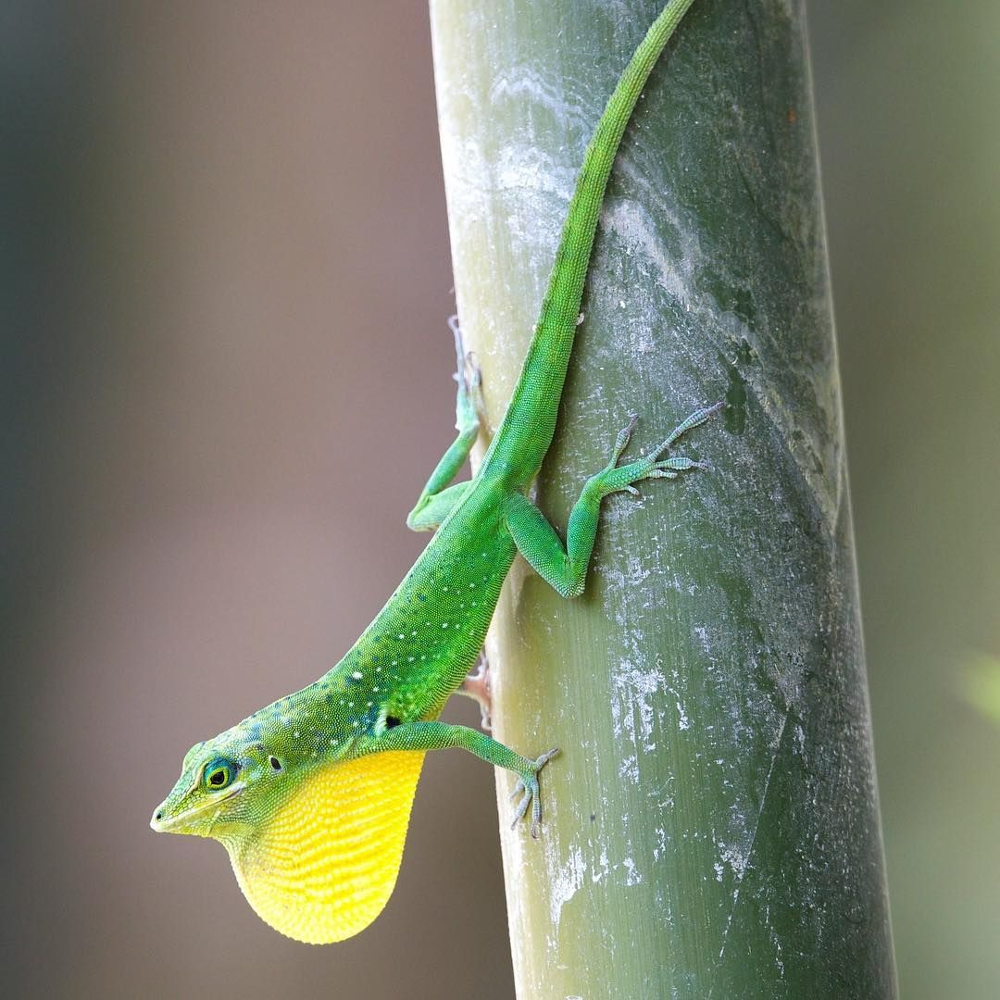

Z
Zandoli
L’Anolis (Dactyloa Roquet), appelé « Zandoli » ou « Zannoli » en créole, est une espèce de lézards endémique de la Martinique et de la Barbade. Il se rencontre aujourd’hui sur de nombreuses autres iles des Antilles.
Ces petits lézards sont très colorés et leur apparence varie selon le type d’habitat qu’ils fréquentent.
Doté d’une bonne capacité d’adaptation, il arrive à perdurer dans tous les milieux naturels, depuis le niveau de la mer jusqu’à 1200m d’altitude, comme anthropisés (urbains ou cultivés).
